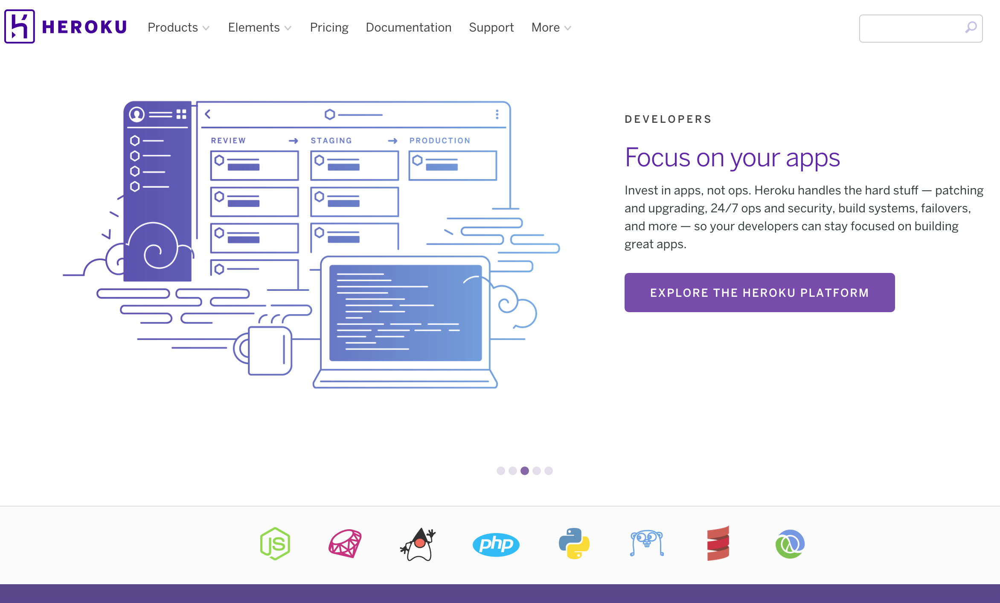
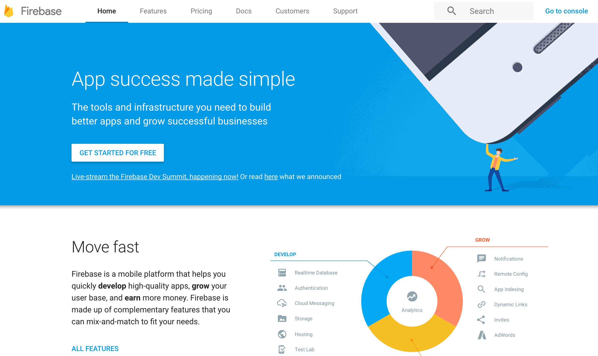

前回の記事では、プログラミング言語の選択の方法について考察しました。今回の記事ではそれに続いて、バックエンドの選択方法について考えをまとめたいと思います。
バックエンドと一言で言ってしまっていますが、ここで意味しているのはWEBやアプリで何かしらデータを扱うサービスを構築する際に必要となってくるデータベース周りのことを指しています。ユーザから何もデータを収集しないサービスであったり、多量のデータを扱わない簡素なサービスは特にこの点については考える必要はないので、そのようなサービスを構築することを考えている読者の方は本記事は読み飛ばして頂いた方がいいかもしれません。
バックエンドの構築に関して言えば、自分でデータベースをゴリゴリ構築する方法と、BaaS（Backend as a Service）といって、すでにデータベースは用意されていてそこにデータを放り込めば良いだけ、という方法の二通りがあるといえるでしょう。
①サービスを構築する際にどのようなデータが必要になってくるのか、そのデータに対してどのようなアクションが必要になってくるのか（例えば、検索機能は必要なのか等）ということをあらかじめ考え、その上でバックエンドを選択する必要があるということと、②比較的開発工数が少なく、スモールスタートが可能なBaaSを利用することが特にベンチャー企業にはオススメである、という二点が本記事の結論となります。
まず①についてですが、実際にサービス構築を始める前に、どのようなデータを扱うことになるのか、そしてどのような機能が求められているのか、をしっかり考えましょう。この点は非常に重要で、さらに言ってしまえば、プログラミング言語を選択する前に、つまり一番初めに考察した方がいいかもしれません。なぜなら、プログラミング言語の特徴として、機能別に強みが若干変わってきたりするからです。例えば、Railsという言語にはRansackという検索機能（正確にはGemと言います）を簡単に付け加えることができるという性質があるため、検索機能を重要視する場合とそうで無い場合でそもそも選択する言語が異なってくるからです。いったんRailsを選択するということが決まってしまえば、バックエンドとしてはRailsと相性のいいHerokuなどのサービスをバックエンドサービスとして選択することになるかと思います。そしてさらに、HerokuはデータベースとしてオープンソースのPostgreSQLをサポートしているので、ここまでくると必然的に使用するデータベースまで決定されることとなります。
Railsユーザに人気のHeroku
そして②についてですが、最近はやりのBaaSを利用できるのであれば、そちらを利用するのがいいかと思います。特にオススメなのは今年の夏にアップデートされたFirebaseというGoogleのサービスです。こちらはJSON形式のデータを扱うことになりますが、初期は無料で使えますし、なおかつサポートしているのが天下のGoogleということで、今後さらに機能が充実していくと思われます。ただ、こちらも上記同様、現状のFirebaseは検索機能が弱いという特徴があるため、いずれにしても許容されるサービス仕様をまずはじめに固めることが重要なのは変わりありません。
FirebaseはBaaSの標準になりうるか
以上、バックエンドの選択方法について簡単にまとめてみました。是非参考にしてみてください。